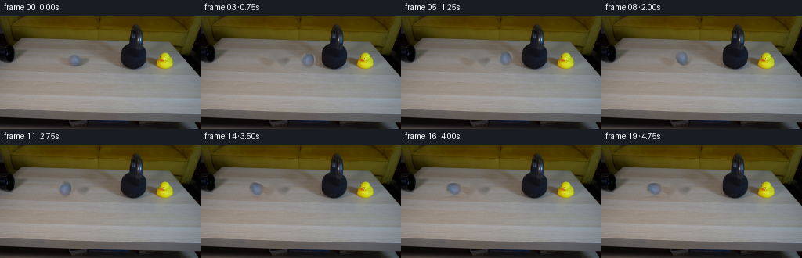
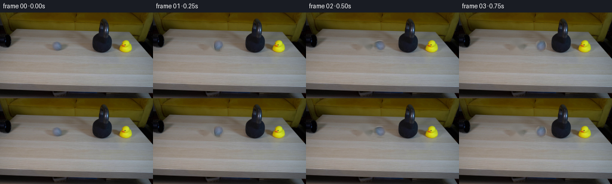

CODING AGENTS AS PIXEL WORLD MODELS
traex/GPT-5.6-Sol · 0197
点击播放 · 原生 RGB 像素
逐轮保存的候选
回放视频、检查图与代码变化。
每份候选均可单独播放。实际图片检查记录在下方工具轨迹中。
候选 01播放与检查图
点击播放 · 原生 RGB 像素


展开代码变化
--- 上一保存版本
+++ 本次保存版本
@@ -0,0 +1,138 @@
+from pathlib import Path
+import cv2
+import numpy as np
+from PIL import Image
+import artifact_io
+
+CASE_DIR = Path(__file__).resolve().parent
+
+
+def soft_ellipse_alpha(h, w, cx, cy, rx, ry, feather=1.0):
+ yy, xx = np.mgrid[0:h, 0:w].astype(np.float32)
+ d = np.sqrt(((xx-cx)/rx)**2 + ((yy-cy)/ry)**2)
+ return np.clip((1.0 + feather/max(rx, ry) - d) * max(rx, ry)/feather, 0, 1)
+
+
+def alpha_over(dst, rgb, alpha):
+ a = alpha[..., None].astype(np.float32)
+ return np.clip(dst.astype(np.float32)*(1-a) + rgb.astype(np.float32)*a, 0, 255).astype(np.uint8)
+
+
+def rotate_patch(patch, alpha, degrees):
+ h, w = alpha.shape
+ M = cv2.getRotationMatrix2D(((w-1)/2, (h-1)/2), degrees, 1.0)
+ p = cv2.warpAffine(patch, M, (w, h), flags=cv2.INTER_CUBIC,
+ borderMode=cv2.BORDER_REFLECT_101)
+ a = cv2.warpAffine(alpha, M, (w, h), flags=cv2.INTER_CUBIC,
+ borderMode=cv2.BORDER_CONSTANT, borderValue=0)
+ return p, np.clip(a, 0, 1)
+
+
+def stamp(frame, patch, alpha, cx, cy, opacity=1.0, xscale=1.0, yscale=1.0):
+ ph, pw = alpha.shape
+ nw = max(3, int(round(pw*xscale)))
+ nh = max(3, int(round(ph*yscale)))
+ p = cv2.resize(patch, (nw, nh), interpolation=cv2.INTER_CUBIC)
+ a = cv2.resize(alpha, (nw, nh), interpolation=cv2.INTER_LINEAR) * opacity
+ x0, y0 = int(round(cx-nw/2)), int(round(cy-nh/2))
+ x1, y1 = x0+nw, y0+nh
+ ix0, iy0 = max(0, x0), max(0, y0)
+ ix1, iy1 = min(frame.shape[1], x1), min(frame.shape[0], y1)
+ if ix1 <= ix0 or iy1 <= iy0:
+ return
+ px0, py0 = ix0-x0, iy0-y0
+ px1, py1 = px0+(ix1-ix0), py0+(iy1-iy0)
+ frame[iy0:iy1, ix0:ix1] = alpha_over(
+ frame[iy0:iy1, ix0:ix1], p[py0:py1, px0:px1], a[py0:py1, px0:px1])
+
+
+def add_shadow(frame, cx, lift):
+ # The table surface is at about y=65 beneath the ball. The airborne
+ # rebound has a softer, paler shadow than the rolling ball.
+ h, w = frame.shape[:2]
+ yy, xx = np.mgrid[0:h, 0:w].astype(np.float32)
+ rx = 8.2 + lift*0.35
+ ry = 1.35 + lift*0.08
+ a = np.exp(-2.3*(((xx-cx)/rx)**2 + ((yy-65.1)/ry)**2))
+ a *= (0.19 / (1.0 + lift*0.10))
+ shade = np.zeros_like(frame) + np.array([61, 55, 49], dtype=np.uint8)
+ frame[:] = alpha_over(frame, shade, a)
+
+
+def make_frames():
+ first = np.asarray(Image.open(CASE_DIR/'first_frame.png').convert('RGB'), dtype=np.uint8)
+ assert first.shape == (144, 256, 3)
+
+ # The supplied frame already contains the ball at (96,56). Isolate that
+ # photographed ball, including its real highlight and surface markings.
+ cx0, cy0 = 96, 56
+ rbox = 11
+ ball = first[cy0-rbox:cy0+rbox+1, cx0-rbox:cx0+rbox+1].copy()
+ bh, bw = ball.shape[:2]
+ yy, xx = np.mgrid[0:bh, 0:bw].astype(np.float32)
+ rr = np.sqrt((xx-rbox)**2 + (yy-rbox)**2)
+ ball_alpha = np.clip((10.15-rr)/1.45, 0, 1).astype(np.float32)
+
+ # Remove the photographed ball and its small contact shadow to expose a
+ # clean, locked-off background for all subsequent positions.
+ mask = np.zeros(first.shape[:2], np.uint8)
+ cv2.circle(mask, (cx0, cy0), 11, 255, -1)
+ cv2.ellipse(mask, (cx0, 64), (12, 3), 0, 0, 360, 255, -1)
+ mask = cv2.GaussianBlur(mask, (3, 3), 0)
+ clean = cv2.inpaint(first, mask, 3, cv2.INPAINT_TELEA)
+
+ # Swift straight roll into the 30 lb kettlebell. The leftmost solid face
+ # of the bell is x=155; the ball is briefly compressed at x=146.5. It
+ # then rebounds, makes a tiny low hop, and loses energy to rolling drag.
+ xs = np.array([96,110,124,138,146.5,134,123,113,104,96,89,83,78,74,
+ 71,69,68,68,68,68], np.float32)
+ ys = np.array([56,56,56,56,56,53.5,51.5,52.0,54.0,56,56,56,56,56,
+ 56,56,56,56,56,56], np.float32)
+
+ # Integrate rolling orientation (clockwise while moving right).
+ angles = np.zeros(20, np.float32)
+ for i in range(1, 20):
+ angles[i] = angles[i-1] - (xs[i]-xs[i-1]) / 9.0 * 180.0/np.pi
+
+ frames = [first.copy()] # contract: frame 00 stays pixel-identical
+ for i in range(1, 20):
+ frame = clean.copy()
+ lift = max(0.0, 56.0-float(ys[i]))
+ add_shadow(frame, float(xs[i]), lift)
+ p, a = rotate_patch(ball, ball_alpha, float(angles[i]))
+
+ # Modest exposure blur conveys the high speed without obscuring the
+ # actual instantaneous position. Rebound and final roll blur less.
+ speed = abs(float(xs[i]-xs[i-1]))
+ if speed > 7 and i != 4:
+ direction = np.sign(float(xs[i]-xs[i-1]))
+ stamp(frame, p, a, float(xs[i]-direction*2.6), float(ys[i]),
+ opacity=0.16)
+ stamp(frame, p, a, float(xs[i]-direction*1.25), float(ys[i]),
+ opacity=0.25)
+
+ if i == 4:
+ # A single real-time frame of elastic deformation at impact.
+ stamp(frame, p, a, float(xs[i]), float(ys[i]),
+ opacity=1.0, xscale=0.80, yscale=1.10)
+ # A subtle dark contact crease on the right side of the ball.
+ y0, y1 = 51, 62
+ x0, x1 = 151, 154
+ contact = np.zeros((y1-y0, x1-x0), np.float32)
+ cy = (contact.shape[0]-1)/2
+ for yy0 in range(contact.shape[0]):
+ contact[yy0, :] = max(0, 1-abs(yy0-cy)/(cy+0.5))*0.12
+ shade = np.zeros((y1-y0, x1-x0, 3), np.uint8) + np.array([37,36,35],np.uint8)
+ frame[y0:y1,x0:x1] = alpha_over(frame[y0:y1,x0:x1], shade, contact)
+ else:
+ stamp(frame, p, a, float(xs[i]), float(ys[i]), opacity=1.0)
+
+ frames.append(frame)
+
+ out = np.stack(frames).astype(np.uint8)
+ assert np.array_equal(out[0], first)
+ return out
+
+
+if __name__ == '__main__':
+ artifact_io.save(make_frames(), CASE_DIR)
可观测工具轨迹
实际执行的命令与返回图片。
命令 1exit 0
/bin/bash -lc "cat GENERATION_RULES.md && printf '\\n---PROMPT---\\n' && cat prompt.txt"
命令 2exit 127
/bin/bash -lc "find . -maxdepth 2 -type f -printf '%p %s bytes\\n' | sort && file first_frame.png"
命令 3exit 0
/bin/bash -lc 'cat artifact_io.py'
命令 4exit 0
/bin/bash -lc "python - <<'PY'
from PIL import Image
import numpy as np
im=np.array(Image.open('first_frame.png').convert('RGB'))
print(im.shape,im.dtype, im.min(),im.max())
# row summaries every 8 rows
for y in range(0,144,8):
a=im[y:y+8]
print(y, np.mean(a,axis=(0,1)).round(1), np.std(a,axis=(0,1)).round(1))
# exact common colors
u,c=np.unique(im.reshape(-1,3),axis=0,return_counts=True)
for i in np.argsort(c)[-20:][::-1]: print(c[i],u[i])
PY"命令 5exit 0
/bin/bash -lc "python - <<'PY'
from PIL import Image
import numpy as np
im=np.array(Image.open('first_frame.png').convert('RGB'))
# Downsample 4x4, print luminance chars
chars=' .:-=+*#%@'
for y in range(0,144,4):
s=''
for x in range(0,256,4):
c=im[y:y+4,x:x+4].mean((0,1)); lum=c@[.2126,.7152,.0722]
# chroma markers: yellow Y, blue B, red R, dark K only when distinctive
mx=c.max(); mn=c.min()
if mx-mn>35 and c[0]>c[2]*1.5 and c[1]>c[2]*1.5: z='Y'
elif mx-mn>25 and c[2]>c[0]*1.25: z='B'
elif mx-mn>25 and c[0]>c[1]*1.3: z='R'
else:z=chars[min(9,int(lum/256*10))]
s+=z
print(f'{y:03}',s)
PY"命令 6exit 0
/bin/bash -lc "python - <<'PY'
import cv2, numpy as np
im=cv2.imread('first_frame.png')[:,:,::-1]
for typ,mask in [
('dark',(im.mean(2)<55)),('black',(im.max(2)<45)),('yellow',((im[:,:,0]-im[:,:,2]>40)&(im[:,:,1]-im[:,:,2]>25))),('grey',((im.max(2)-im.min(2)<20)&(im.mean(2)<110))),('blue',(im[:,:,2]>im[:,:,0]+20))]:
m=(mask.astype('uint8')*255); n,lab,stats,cen=cv2.connectedComponentsWithStats(m,8)
print('\\n',typ)
for i in np.argsort(stats[1:,4])[::-1][:15]+1:
x,y,w,h,a=stats[i];
if a>5: print(a,(x,y,w,h),tuple(cen[i].round(1)))
PY"命令 7exit 0
/bin/bash -lc "python - <<'PY'
from PIL import Image
import numpy as np
im=np.array(Image.open('first_frame.png').convert('RGB'))
# detailed cells 2x2 for y 20:76 x0:200. classify color/luma
for y in range(18,76,2):
s=''
for x in range(0,200,2):
c=im[y:y+2,x:x+2].mean((0,1)); lum=c@[.2126,.7152,.0722]; d=c.max()-c.min()
if c.max()<22:z='K'
elif lum<45:z='k'
elif d<12 and lum<90:z='g'
elif d<18 and lum<130:z='G'
elif c[2]>c[0]+15:z='B'
elif d>35 and c[0]>c[2]+30:z='Y'
else:z='.' if lum<80 else ':' if lum<120 else '+' if lum<160 else '#'
s+=z
print(f'{y:03} {s}')
PY"命令 8exit 0
/bin/bash -lc "python - <<'PY'
from PIL import Image
import numpy as np
im=np.array(Image.open('first_frame.png').convert('RGB'))
# print actual RGB grids each 2px mean crop 80:120,44:68
for y in range(44,68,2):
print('y',y)
for x in range(80,120,2):
c=im[y:y+2,x:x+2].mean((0,1)).astype(int)
print(f'{x}:{c[0]:02x}{c[1]:02x}{c[2]:02x}',end=' ')
print()
PY"命令 9exit 0
/bin/bash -lc "python - <<'PY'
from PIL import Image
import numpy as np
im=np.array(Image.open('first_frame.png').convert('RGB'))
chars='@%#*+=-:. '
for y in range(20,75):
s=''
for x in range(0,200):
c=im[y,x]; lum=c@[.2126,.7152,.0722]
s+=chars[min(9,int(lum/256*10))]
print(f'{y:03} '+s)
PY"命令 10exit 0
/bin/bash -lc "python - <<'PY'
import cv2,numpy as np
im=cv2.imread('first_frame.png')
g=cv2.cvtColor(im,cv2.COLOR_BGR2GRAY)
# per x darkest fractions in bands and color means
for x in range(0,256,8):
a=im[8:72,x:x+8][:,:,::-1]
print(f'{x:3}',a.mean((0,1)).astype(int), 'dark',round((a.mean(2)<45).mean(),2),'edge',round(cv2.Laplacian(g[8:72,x:x+8],cv2.CV_32F).var(),0))
PY"命令 11exit 0
/bin/bash -lc "cat > generate.py <<'PY'
from pathlib import Path
import cv2
import numpy as np
from PIL import Image
import artifact_io
CASE_DIR = Path(__file__).resolve().parent
def soft_ellipse_alpha(h, w, cx, cy, rx, ry, feather=1.0):
yy, xx = np.mgrid[0:h, 0:w].astype(np.float32)
d = np.sqrt(((xx-cx)/rx)**2 + ((yy-cy)/ry)**2)
return np.clip((1.0 + feather/max(rx, ry) - d) * max(rx, ry)/feather, 0, 1)
def alpha_over(dst, rgb, alpha):
a = alpha[..., None].astype(np.float32)
return np.clip(dst.astype(np.float32)*(1-a) + rgb.astype(np.float32)*a, 0, 255).astype(np.uint8)
def rotate_patch(patch, alpha, degrees):
h, w = alpha.shape
M = cv2.getRotationMatrix2D(((w-1)/2, (h-1)/2), degrees, 1.0)
p = cv2.warpAffine(patch, M, (w, h), flags=cv2.INTER_CUBIC,
borderMode=cv2.BORDER_REFLECT_101)
a = cv2.warpAffine(alpha, M, (w, h), flags=cv2.INTER_CUBIC,
borderMode=cv2.BORDER_CONSTANT, borderValue=0)
return p, np.clip(a, 0, 1)
def stamp(frame, patch, alpha, cx, cy, opacity=1.0, xscale=1.0, yscale=1.0):
ph, pw = alpha.shape
nw = max(3, int(round(pw*xscale)))
nh = max(3, int(round(ph*yscale)))
p = cv2.resize(patch, (nw, nh), interpolation=cv2.INTER_CUBIC)
a = cv2.resize(alpha, (nw, nh), interpolation=cv2.INTER_LINEAR) * opacity
x0, y0 = int(round(cx-nw/2)), int(round(cy-nh/2))
x1, y1 = x0+nw, y0+nh
ix0, iy0 = max(0, x0), max(0, y0)
ix1, iy1 = min(frame.shape[1], x1), min(frame.shape[0], y1)
if ix1 <= ix0 or iy1 <= iy0:
return
px0, py0 = ix0-x0, iy0-y0
px1, py1 = px0+(ix1-ix0), py0+(iy1-iy0)
frame[iy0:iy1, ix0:ix1] = alpha_over(
frame[iy0:iy1, ix0:ix1], p[py0:py1, px0:px1], a[py0:py1, px0:px1])
def add_shadow(frame, cx, lift):
# The table surface is at about y=65 beneath the ball. The airborne
# rebound has a softer, paler shadow than the rolling ball.
h, w = frame.shape[:2]
yy, xx = np.mgrid[0:h, 0:w].astype(np.float32)
rx = 8.2 + lift*0.35
ry = 1.35 + lift*0.08
a = np.exp(-2.3*(((xx-cx)/rx)**2 + ((yy-65.1)/ry)**2))
a *= (0.19 / (1.0 + lift*0.10))
shade = np.zeros_like(frame) + np.array([61, 55, 49], dtype=np.uint8)
frame[:] = alpha_over(frame, shade, a)
def make_frames():
first = np.asarray(Image.open(CASE_DIR/'first_frame.png').convert('RGB'), dtype=np.uint8)
assert first.shape == (144, 256, 3)
# The supplied frame already contains the ball at (96,56). Isolate that
# photographed ball, including its real highlight and surface markings.
cx0, cy0 = 96, 56
rbox = 11
ball = first[cy0-rbox:cy0+rbox+1, cx0-rbox:cx0+rbox+1].copy()
bh, bw = ball.shape[:2]
yy, xx = np.mgrid[0:bh, 0:bw].astype(np.float32)
rr = np.sqrt((xx-rbox)**2 + (yy-rbox)**2)
ball_alpha = np.clip((10.15-rr)/1.45, 0, 1).astype(np.float32)
# Remove the photographed ball and its small contact shadow to expose a
# clean, locked-off background for all subsequent positions.
mask = np.zeros(first.shape[:2], np.uint8)
cv2.circle(mask, (cx0, cy0), 11, 255, -1)
cv2.ellipse(mask, (cx0, 64), (12, 3), 0, 0, 360, 255, -1)
mask = cv2.GaussianBlur(mask, (3, 3), 0)
clean = cv2.inpaint(first, mask, 3, cv2.INPAINT_TELEA)
# Swift straight roll into the 30 lb kettlebell. The leftmost solid face
# of the bell is x=155; the ball is briefly compressed at x=146.5. It
# then rebounds, makes a tiny low hop, and loses energy to rolling drag.
xs = np.array([96,110,124,138,146.5,134,123,113,104,96,89,83,78,74,
71,69,68,68,68,68], np.float32)
ys = np.array([56,56,56,56,56,53.5,51.5,52.0,54.0,56,56,56,56,56,
56,56,56,56,56,56], np.float32)
# Integrate rolling orientation (clockwise while moving right).
angles = np.zeros(20, np.float32)
for i in range(1, 20):
angles[i] = angles[i-1] - (xs[i]-xs[i-1]) / 9.0 * 180.0/np.pi
frames = [first.copy()] # contract: frame 00 stays pixel-identical
for i in range(1, 20):
frame = clean.copy()
lift = max(0.0, 56.0-float(ys[i]))
add_shadow(frame, float(xs[i]), lift)
p, a = rotate_patch(ball, ball_alpha, float(angles[i]))
# Modest exposure blur conveys the high speed without obscuring the
# actual instantaneous position. Rebound and final roll blur less.
speed = abs(float(xs[i]-xs[i-1]))
if speed > 7 and i "'!= 4:
direction = np.sign(float(xs[i]-xs[i-1]))
stamp(frame, p, a, float(xs[i]-direction*2.6), float(ys[i]),
opacity=0.16)
stamp(frame, p, a, float(xs[i]-direction*1.25), float(ys[i]),
opacity=0.25)
if i == 4:
# A single real-time frame of elastic deformation at impact.
stamp(frame, p, a, float(xs[i]), float(ys[i]),
opacity=1.0, xscale=0.80, yscale=1.10)
# A subtle dark contact crease on the right side of the ball.
y0, y1 = 51, 62
x0, x1 = 151, 154
contact = np.zeros((y1-y0, x1-x0), np.float32)
cy = (contact.shape[0]-1)/2
for yy0 in range(contact.shape[0]):
contact[yy0, :] = max(0, 1-abs(yy0-cy)/(cy+0.5))*0.12
shade = np.zeros((y1-y0, x1-x0, 3), np.uint8) + np.array([37,36,35],np.uint8)
frame[y0:y1,x0:x1] = alpha_over(frame[y0:y1,x0:x1], shade, contact)
else:
stamp(frame, p, a, float(xs[i]), float(ys[i]), opacity=1.0)
frames.append(frame)
out = np.stack(frames).astype(np.uint8)
assert np.array_equal(out[0], first)
return out
if __name__ == '"'__main__':
artifact_io.save(make_frames(), CASE_DIR)
PY
python generate.py
python - <<'PY'
from PIL import Image
import numpy as np
f=np.array(Image.open('first_frame.png').convert('RGB'))
g=np.array(Image.open('frames/00.png').convert('RGB'))
print('frame0 identical:',np.array_equal(f,g))
z=np.load('pixels.npz')['pixels']
print('pixels',z.shape,z.dtype,'outputs',len(list(__import__('pathlib').Path('frames').glob('*.png'))))
for i in [1,2,3,4,5,6,10,19]:
a=np.array(Image.open(f'frames/{i:02}.png'))
print(i,'changed',np.any(a"'!=f,axis=2).sum(),'"'mean abs',np.abs(a.astype(int)-f.astype(int)).mean().round(3))
PY"保存候选 1 份；完成命令 11 次；可验证图片返回 0 张。原始 API 响应与完整日志保留在本地。